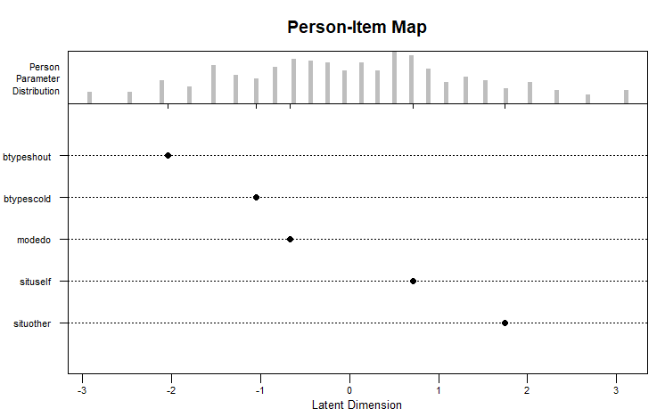

Installing eirm
The stable version on CRAN can be installed by:
install.packages("eirm")The development version can be installed by:
devtools::install_github(repo = "okanbulut/eirm")Note: If you download the Github version and see the following output on your console (or something similar), please choose 3: None from this list. You can simply type 3 in your R console and hit “enter”.
Downloading GitHub repo okanbulut/eirm@master
These packages have more recent versions available.
Which would you like to update?
1: All
2: CRAN packages only
3: None
4: Rcpp (1.0.1 -> 1.0.3 ) [CRAN]
5: RcppEigen (0.3.3.5.0 -> 0.3.3.7.0) [CRAN]
6: plyr (1.8.4 -> 1.8.5 ) [CRAN]
7: stringi (1.4.3 -> 1.4.5 ) [CRAN]
Enter one or more numbers, or an empty line to skip updates:If this also fails, you can run the following lines all together and select 3: None by typing 3 in your R console:
Sys.setenv(R_REMOTES_NO_ERRORS_FROM_WARNINGS=TRUE)
devtools::install_github(repo = "okanbulut/eirm")
Citing eirm
To cite eirm in your work, please use the following APA-style citation:
Bulut, O. (2020). eirm: Explanatory item response modeling for dichotomous and polytomous item responses [Computer software]. Available from http://CRAN.R-project.org/package=eirm.

Example 1: Rasch model
The Rasch model (i.e., a fully descriptive model) can be estimated using eirm. The following example shows how to estimate Rasch item parameters for the verbal aggression data set (see ?VerbAgg for further details). A preview of the VerbAgg data set is shown below:
data("VerbAgg")
head(VerbAgg)
Anger Gender item resp id btype situ mode r2
1 20 M S1WantCurse no 1 curse other want N
2 11 M S1WantCurse no 2 curse other want N
3 17 F S1WantCurse perhaps 3 curse other want Y
4 21 F S1WantCurse perhaps 4 curse other want Y
5 17 F S1WantCurse perhaps 5 curse other want Y
6 21 F S1WantCurse yes 6 curse other want YTo estimate the Rasch model, a regression-like formula must be defined: formula = "r2 ~ -1 + item + (1|id)". In the formula,
-
r2is the variable for dichotomous item responses -
-1removes the intercept from the model and yields parameter estimates for all items in the data set. With1(instead of-1), an intercept representing the parameter of the first item and relative parameters for the remaining items (i.e., distance from the parameter of the first item) would be estimated. -
itemis the variable representing item IDs in the data set -
(1|id)refers to the random effects for persons represented by theidcolumn in the data set.
The output for the Rasch model is shown below:
mod1 <- eirm(formula = "r2 ~ -1 + item + (1|id)", data = VerbAgg)
print(mod1)
EIRM formula: "r2 ~ -1 + item + (1|id)"
Number of persons: 316
Number of observations: 7584
Number of predictors: 24
Parameter Estimates:
Easiness S.E. z-value p-value
itemS1WantCurse 1.2211 0.161 7.5794 3.47e-14
itemS1WantScold 0.5648 0.153 3.7032 2.13e-04
itemS1WantShout 0.0801 0.150 0.5323 5.95e-01
itemS2WantCurse 1.7488 0.174 10.0632 8.03e-24
itemS2WantScold 0.7077 0.154 4.6020 4.18e-06
itemS2WantShout 0.0117 0.150 0.0779 9.38e-01
itemS3WantCurse 0.5295 0.152 3.4777 5.06e-04
itemS3WantScold -0.6864 0.154 -4.4506 8.56e-06
itemS3WantShout -1.5269 0.169 -9.0222 1.84e-19
itemS4wantCurse 1.0820 0.159 6.8193 9.15e-12
itemS4WantScold -0.3494 0.151 -2.3062 2.11e-02
itemS4WantShout -1.0440 0.159 -6.5628 5.28e-11
itemS1DoCurse 1.2211 0.161 7.5794 3.47e-14
itemS1DoScold 0.3896 0.151 2.5739 1.01e-02
itemS1DoShout -0.8712 0.156 -5.5680 2.58e-08
itemS2DoCurse 0.8726 0.156 5.6063 2.07e-08
itemS2DoScold -0.0567 0.151 -0.3766 7.06e-01
itemS2DoShout -1.4819 0.168 -8.8152 1.19e-18
itemS3DoCurse -0.2110 0.151 -1.3988 1.62e-01
itemS3DoScold -1.5043 0.169 -8.9189 4.71e-19
itemS3DoShout -2.9750 0.233 -12.7483 3.19e-37
itemS4DoCurse 0.7077 0.154 4.6020 4.18e-06
itemS4DoScold -0.3842 0.152 -2.5328 1.13e-02
itemS4DoShout -1.9995 0.184 -10.8750 1.52e-27
Note: The estimated parameters above represent 'easiness'.
Use difficulty = TRUE to get difficulty parameters.By default, the eirm function returns the easiness parameters because the function uses a regression model parameterization where positive parameters indicate positive association with the dependent variable. In order to print the difficulty parameters (instead of easiness), print(mod1, difficulty = TRUE) must be used:
EIRM formula: "r2 ~ -1 + item + (1|id)"
Number of persons: 316
Number of observations: 7584
Number of predictors: 24
Parameter Estimates:
Difficulty S.E. z-value p-value
itemS1WantCurse -1.2211 0.161 7.5794 3.47e-14
itemS1WantScold -0.5648 0.153 3.7032 2.13e-04
itemS1WantShout -0.0801 0.150 0.5323 5.95e-01
itemS2WantCurse -1.7488 0.174 10.0632 8.03e-24
itemS2WantScold -0.7077 0.154 4.6020 4.18e-06
itemS2WantShout -0.0117 0.150 0.0779 9.38e-01
itemS3WantCurse -0.5295 0.152 3.4777 5.06e-04
itemS3WantScold 0.6864 0.154 -4.4506 8.56e-06
itemS3WantShout 1.5269 0.169 -9.0222 1.84e-19
itemS4wantCurse -1.0820 0.159 6.8193 9.15e-12
itemS4WantScold 0.3494 0.151 -2.3062 2.11e-02
itemS4WantShout 1.0440 0.159 -6.5628 5.28e-11
itemS1DoCurse -1.2211 0.161 7.5794 3.47e-14
itemS1DoScold -0.3896 0.151 2.5739 1.01e-02
itemS1DoShout 0.8712 0.156 -5.5680 2.58e-08
itemS2DoCurse -0.8726 0.156 5.6063 2.07e-08
itemS2DoScold 0.0567 0.151 -0.3766 7.06e-01
itemS2DoShout 1.4819 0.168 -8.8152 1.19e-18
itemS3DoCurse 0.2110 0.151 -1.3988 1.62e-01
itemS3DoScold 1.5043 0.169 -8.9189 4.71e-19
itemS3DoShout 2.9750 0.233 -12.7483 3.19e-37
itemS4DoCurse -0.7077 0.154 4.6020 4.18e-06
itemS4DoScold 0.3842 0.152 -2.5328 1.13e-02
itemS4DoShout 1.9995 0.184 -10.8750 1.52e-27
Note: The estimated parameters above represent 'difficulty'.The mod1 object is essentially a glmerMod-class object from the lme4 package (Bates, Maechler, Bolker, & Walker, 2015). All glmerMod results for the estimated model can seen with mod1$model. For example, estimated random effects for persons (i.e., theta estimates) can be obtained using:
ranef(mod1$model)$idExample 2: EIRM for dichotomous responses
The following example shows how to use item-related and person-related explanatory variables to explain dichotomous responses in the verbal aggression data set.
mod2a <- eirm(formula = "r2 ~ -1 + situ + btype + mode + (1|id)", data = VerbAgg)
print(mod2a)
EIRM formula: "r2 ~ -1 + situ + btype + mode + (1|id)"
Number of persons: 316
Number of observations: 7584
Number of predictors: 5
Parameter Estimates:
Easiness S.E. z-value p-value
situother 1.744 0.1015 17.19 3.29e-66
situself 0.716 0.0978 7.32 2.43e-13
btypescold -1.055 0.0680 -15.51 3.02e-54
btypeshout -2.042 0.0729 -28.00 1.51e-172
modedo -0.672 0.0562 -11.95 6.69e-33
Note: The estimated parameters above represent 'easiness'. Use difficulty = TRUE to get difficulty parameters.It is possible to visualize the parameters using an item-person map using plot(mod2a), which returns the following plot. Note that this plot is a modified version of the plotPImap function from the eRm package (Mair, Hatzinger, Maier, Rusch, & Debelak, 2020).

Aesthetic elements such as axis labels and plot title can be added to the plot. For example, the following code updates the x-axis label and the main plot title (see ?plot.eirm for further details).
plot(mod2a, difficulty = TRUE, main = "Verbal Aggression Example", latdim = "Verbal Aggression")which will show the difficulty parameters (instead of easiness), change the main title above the plot, and change the x-axis – the name for the latent trait being measured.
Also, it is possible to compare nested explanatory models with each other. The following example shows the estimation of a more compact version of mod2a with one less variable and compares the two models (i.e., mod2a vs. mod2b).
mod2b <- eirm(formula = "r2 ~ -1 + situ + btype + (1|id)", data = VerbAgg)
anova(mod2a$model, mod2b$model)
Data: data
Models:
mod2b$model: r2 ~ -1 + situ + btype + (1 | id)
mod2a$model: r2 ~ -1 + situ + btype + mode + (1 | id)
Df AIC BIC logLik deviance Chisq Chi Df Pr(>Chisq)
mod2b$model 5 8390 8424 -4190 8380
mod2a$model 6 8250 8292 -4119 8238 142 1 <2e-16 ***
---
Signif. codes: 0 ‘***’ 0.001 ‘**’ 0.01 ‘*’ 0.05 ‘.’ 0.1 ‘ ’ 1Example 3: EIRM for polytomous responses
It is also possible to use the eirm function with polytomous item responses as well. Because the function only accepts dichotomous responses (i.e., binomial distribution), polytomous data must be reformatted first. To reformat the data, the polyreformat function can be used. The following example demonstrates how polytomous responses (no, perhaps, and yes) in the verbal aggression data set can be reformatted into a dichotomous form:
VerbAgg2 <- polyreformat(data=VerbAgg, id.var = "id", long.format = FALSE, var.name = "item", val.name = "resp")
head(VerbAgg2)
Anger Gender item resp id btype situ mode r2 polycategory polyresponse polyitem
1 20 M S1WantCurse no 1 curse other want N cat_perhaps 0 S1WantCurse.cat_perhaps
2 11 M S1WantCurse no 2 curse other want N cat_perhaps 0 S1WantCurse.cat_perhaps
3 17 F S1WantCurse perhaps 3 curse other want Y cat_perhaps 1 S1WantCurse.cat_perhaps
4 21 F S1WantCurse perhaps 4 curse other want Y cat_perhaps 1 S1WantCurse.cat_perhaps
5 17 F S1WantCurse perhaps 5 curse other want Y cat_perhaps 1 S1WantCurse.cat_perhaps
6 21 F S1WantCurse yes 6 curse other want Y cat_perhaps NA S1WantCurse.cat_perhapsIn the reformatted data, polyresponse is the new dependent variable (i.e., pseudo-dichotomous version of the original response variable resp) and polycategory represents the response categories. Based on the reformatted data, each item has two rows (number of response categories - 1) based on the following rules (see Stanke and Bulut (2019) for further details on this parameterization):
- If
polycategory= “cat_perhaps” andresp= “no”, thenpolyresponse= 0 - If
polycategory= “cat_perhaps” andresp= “perhaps”, thenpolyresponse= 1 - If
polycategory= “cat_perhaps” andresp= “yes”, thenpolyresponse= NA
and
- If
polycategory= “cat_yes” andresp= “no”, thenpolyresponse= NA - If
polycategory= “cat_yes” andresp= “perhaps”, thenpolyresponse= 0 - If
polycategory= “cat_yes” andresp= “yes”, thenpolyresponse= 1
NOTE: Although polyreformat is capable of reshaping wide-format data into long-format and reformat the long data for the analysis with eirm, a safer option is to transform the data from wide to long format before using polyreformat. The melt function from the reshape2 package can easily transform wide data to long data.
Several polytomous models can be estimated using the reformatted data:
Model 1: It explains only the first threshold (i.e., threshold from no to perhaps) based on explanatory variables:
mod3 <- eirm(formula = "polyresponse ~ -1 + situ + btype + mode + (1|id)", data = VerbAgg2)Model 2: It explains the first threshold (i.e., threshold from no to perhaps) and second threshold (perhaps to yes) based on explanatory variables:
mod4 <- eirm(formula = "polyresponse ~ -1 + btype + situ + mode + polycategory + polycategory:btype + (1|id)",
data = VerbAgg2)